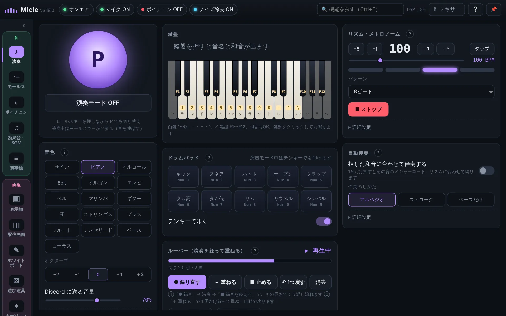
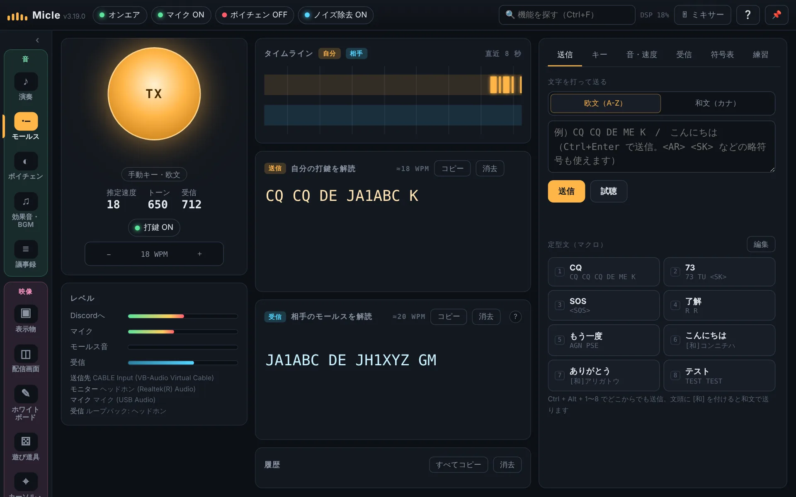
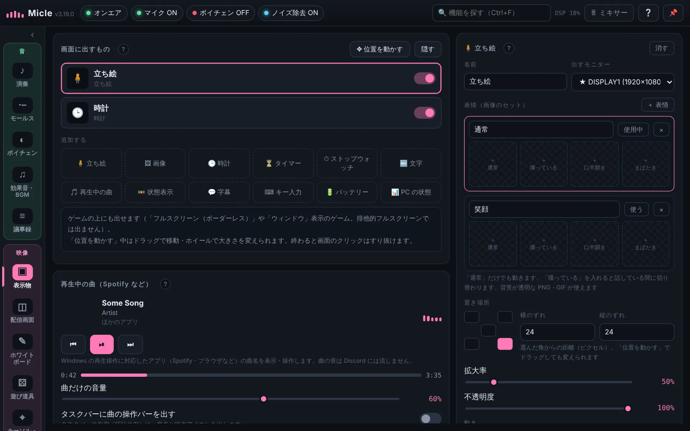

分享给大家的应用
和朋友边打游戏边语音时，我总会冒出各种想法：“这里想放个音效”“想不关游戏就挪动后面的窗口”“想马上开好我的世界服务器”。
我把这些功能一个个做出来、放进同一个应用，结果连自己都惊讶它有多方便。所以想把它分享给大家。
和朋友边打游戏边语音时，我总会冒出各种想法：“这里想放个音效”“想不关游戏就挪动后面的窗口”“想马上开好我的世界服务器”。
我把这些功能一个个做出来、放进同一个应用，结果连自己都惊讶它有多方便。所以想把它分享给大家。
全部在一个应用里。不用的功能关掉后，界面和后台处理都会消失，轻快又清爽。
自由调整音高、共鸣和效果。女生、机器人、电话、山洞等 24 种预设，可直接用于 Discord 等语音通话。
去除键盘、风扇和生活噪音，只传递人声。还会把忽大忽小的声音调整到合适音量。
一个键播放音效。把喜欢的音乐作为 BGM 放进通话，说话时自动调低。
在游戏画面上显示立绘、时钟、计时器、正在播放的歌曲和字幕，也能出现在直播里。
长按或连按某个键，游戏中也能马上打开的小面板。可放音量、设备电量、开关和笔记。
一键打开应用、移动窗口、调音量和亮度、转换文字等 99 种操作。还能录制并回放操作的宏。
不用关闭全屏游戏，就能把游戏后面的窗口移到旁边的显示器。
不用打开路由器设置页，一个按钮就能为我的世界等服务器开放端口。还能检查防火墙和网速。
随手写、马上看的笔记。支持清单、标签、置顶和到期提醒。
键盘变钢琴。用鼓、伴奏和循环录音，在通话里一起合奏。
把输入的文字变成摩尔斯音发送，也能把对方的摩尔斯电码识别成文字。还可以练习。
只在你的电脑里把通话转成文字，声音不会传到网络上。
骰子、轮盘、抽签、投票、抢答、宾果，以及可以直接在屏幕上画的笔。
读取游戏和应用里的文字，当场翻译并叠加显示。只在电脑里运行。
用文字描述就能生成图片，还能做出张嘴、眨眼和不同表情。也能做动图。
把立绘、窗口和摄像头叠在一起，作为 Discord 摄像头或屏幕共享显示。
整理了 Micle 的常见用法，并附上详细步骤。
不用打开路由器设置页，一个按钮完成端口转发，还能马上看到朋友需要的地址。
查看详情 →用免费的虚拟麦克风和 Micle 改变 Discord 通话中的声音。24 种预设。
查看详情 →用 AI 去除键盘声、风扇声和生活噪音，只传递人声。
查看详情 →用摩尔斯音发送文字、把对方的摩尔斯识别成文字、练习听码。支持日文。
查看详情 →在游戏上叠加会说话的立绘、字幕、正在播放的歌曲和计时器。
查看详情 →快捷菜单、把游戏后面的窗口移到另一台显示器、准星、笔记、GIF 录制等。
查看详情 →支持中文、英语、日语等 10 种语言。第一次使用时，会用 1 分钟带你了解用法。



基础功能永久免费。想用更多功能的人可以选择专业版。两个版本都没有广告。
可随时取消。特卖期间永久许可证更便宜，并可免费试用专业版 3 天。
最初 3 天可以免费试用专业版功能。购买后许可证密钥会立即通过邮件发送。由于是数字商品，不提供退款；如误购（例如重复购买），请通过邮件联系我们。
Micle 仍处于预发布阶段，在 Windows 将其识别为常用应用之前，可能会出现这个蓝色画面。点击“更多信息”→“仍要运行”即可打开。请只从官方页面（GitHub）下载。
安装免费的虚拟麦克风“VB-CABLE”（VB-Audio Software 的捐赠软件，另行分发），并把 Discord 的输入设备设为“CABLE Output”。Micle 首次启动时会按画面一步步引导。详见 在 Discord 中使用变声器。
没有。免费版永久免费，也不会显示广告。最初 3 天还可以试用专业版功能。不用的功能可以隐藏。
关闭不用的功能后，相应处理也会停止。还有轻量模式。AI 功能的数据只在使用时才下载。
不需要。打开下载的 Micle.exe 即可使用。想显示在开始菜单的话，也可以在应用内安装到电脑（不需要管理员权限）。
不会。变声、降噪、转文字和 AI 都在你的电脑里运行。详见 隐私政策。
把购买邮件中的许可证密钥粘贴到 Micle 的 Settings → About → License key，然后按“Unlock”。只有第一次验证需要联网。
请通过 Micle 的“Feedback”或联系表单发送，任何语言都可以。邮箱：。
打开 Micle.exe 即可使用。AI 功能的数据只在使用时另行下载。
首次打开时如出现“Windows 已保护你的电脑”，请点击“更多信息”→“仍要运行”（因为是预发布版，详见常见问题）。
Windows 10 / 11（64 位）· 最新版 v · MB · 无广告